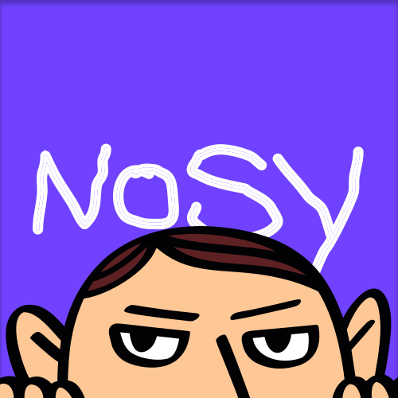
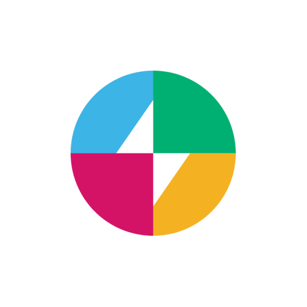
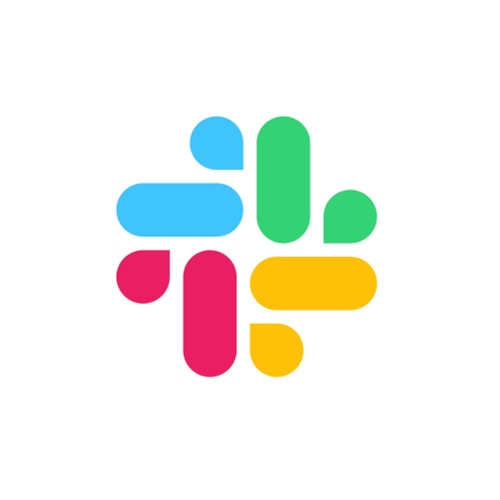
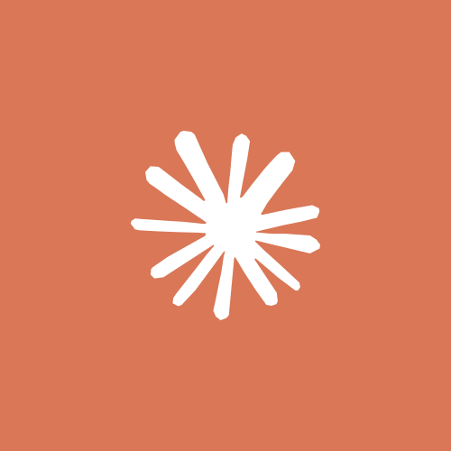
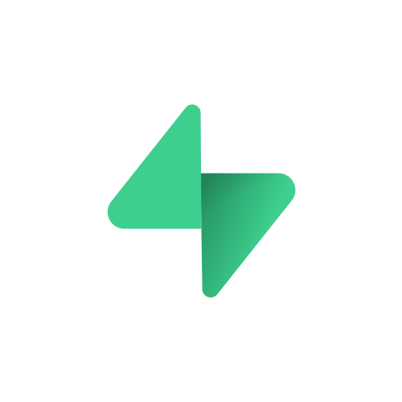

Nosy architectureNosy watches Slack so you do not have to.
Follow a conversation once. Nosy remembers it, filters the noise, and reaches out when there is a decision, risk, promise, or question worth your time.

Run /nosy
Follow this thread or channel

Watched conversation
New replies flow to Nosy
DM Nosy
Ask, play, or request a teaser
Nosy watches and filters
It filters thread noise. In DMs, it answers questions, runs games, and makes movie teasers from workspace gossip.
Bolt app on Railway
Claude
Reads threads and writes movie prompts.
Real-Time Search
Finds live Slack messages for a DM question.

Supabase
Stores memory, follows, and receipts.
Gemini Omni Flash
Renders the Nosy Productions teaser.
Notable update
A short DM about a decision, risk, or blindspot.
Receipt card
Nudge, snooze, or close a promise that went stale.
DM fun
Answers, games, and short movie teasers.